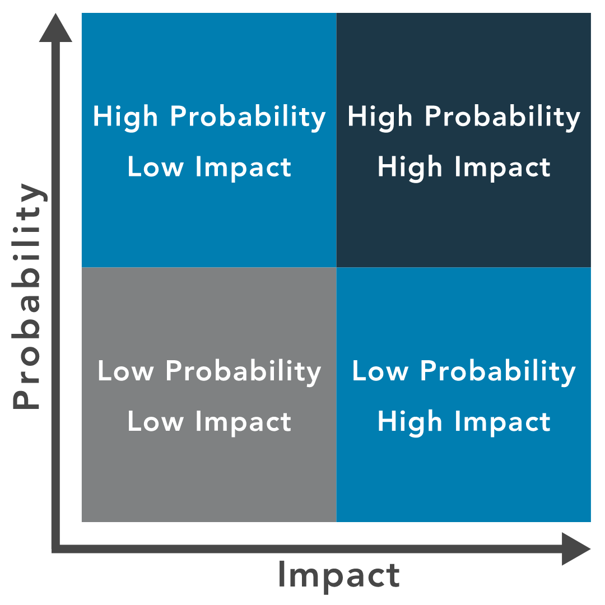

3. Introduction to Risk Management
This is about the levels of Risks, based on Probability and Impact, here Probability is the likeliness of an attack happening and Impact is the amount of damage caused when the Vulnerability is being exploited.
Low Probability, Low Impact:
These types of risks can be ignored or made the lowest priority
Low Probability, High Impact:
These should be fixed as it has a high Impact rate, but can be Post-poned for a little while.
High Probability, Low Impact:
These have similar threat rating as the one above.
High Probability, High Impact:
These are the top priorities as they have a higher rate of impact and probability, they must be fixed as soon as possible, before they are mis-used.
email: notalive7593@duck.com
discord: _i_am_innocent_
github: github.com/notalive24